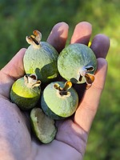

フェイジョアの生産量 都道府県ランキング
収穫量
フェイジョアの収穫量が全国で最も多いのは福島県で、1 tです。全国（1 t）の約 100%を占めます。

| 順位 | 都道府県 | 収穫量 | 全国に占める割合 |
|---|---|---|---|
| 1位 | 福島県 | 1 t | 約 100% |
PR

フェイジョアの生産量の推移（令和3年産〜令和5年産）
全国の収穫量は、令和3年産の1 tから令和5年産の1 tへ、25%増えました。期間中、1位は一貫して福島県です。
| 年 | 全国 | 1位 | 2位 | 3位 |
|---|---|---|---|---|
| 令和5年産 | 1 t | 福島県1 t | ||
| 令和4年産 | 1 t | 福島県1 t | ||
| 令和3年産 | 1 t | 福島県1 t |
この数字について
- 分類：フトモモ科
- 全国の収穫量：1 t
- この数字が表すもの：収穫量（収穫された重量）
- 調査：特産果樹生産動態等調査 令和5年産
- この品目は統計に上位3産地しか載っていません。4位以下は国が公表していないため分かりません。
- 産地の量は1t単位に丸めて公表されています（全国の量は0.1t単位）。生産量が少ない品目では、丸めの影響で産地の数量が全国を少し超えることがあります。割合に「約」を付けているのはそのためです。
フェイジョアの生産量について、よくある質問
- フェイジョアの生産量が日本一の都道府県はどこですか？
- 福島県です。特産果樹生産動態等調査（令和5年産）で1 tでした。
- フェイジョアの全国の生産量はどれくらいですか？
- 1 t（令和5年産）です。
広告